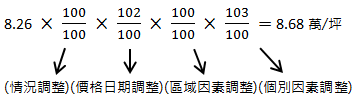
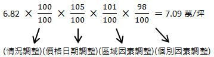
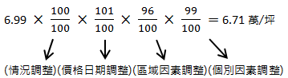

不動產估價實務模擬試題
內文
• 一、勘估標的為臨接30公尺寬道路之方整土地，土地面積500坪，使用分區為都市計畫住宅區，建蔽率50%，容積率150%，價格日期為107年7月1日，勘察日期為107年8月19日。請以下列所給的資料，在勘估標的移入容積20%之條件下，評估勘估標的之特定價格，並以不動產估價報告書呈現。
• 二、買賣實例資料：
-
(一)實例A：土地面積242坪，107年3月28日成交金額2,000萬元，都市計畫住宅區，建蔽率50%，容積率180%，位於勘估標的之近鄰地區，個別因素調整率103%，價格日期調整率102%。
-
(二)實例B：土地面積308坪，106年4月14日成交金額2,100萬元，都市計畫住宅區，建蔽率50%，容積率150%，位於勘估標的之類似地區，區域因素調整率101%，個別因素調整率98%，價格日期調整率105%。
-
(三)實例C：土地面積415坪，107年5月10日成交金額2,900萬元，都市計畫住宅區，建蔽率50%，容積率150%，位於勘估標的之類似地區，區域因素調整率96%，個別因素調整率99%，價格日期調整率101%。
-
(四)實例D：土地面積362坪，107年1月10日成交金額3,000萬元，都市計畫住宅區，建蔽率50%，容積率180%，位於勘估標的之類似地區，區域因素調整率95%，個別因素調整率104%，價格日期調整率103%。
-
(五)實例E：土地面積540坪，106年10月30日成交金額3,800萬元，都市計畫住宅區，建蔽率50%，容積率150%，位於勘估標的之近鄰地區，個別因素調整率95%，價格日期調整率104%。
-
(六)實例F：土地面積350坪，106年2月20日成交金額2,800萬元，都市計畫住宅區，建蔽率50%，容積率180%，位於勘估標的之類似地區，區域因素調整率102%，個別因素調整率98%，價格日期調整率108%。
• 三、土地開發分析法資料：規劃興建地上三層或四層之透天住宅，無地下室，陽台以總樓地板面積之八分之一計，屋頂突出物以建築面積之八分之一計。平均售價每坪12萬元，營造施工費每坪5萬元。規劃設計費以營造施工費之2%計，廣告銷售費以總銷售金額之4%計，管理費以總銷售金額之3%計，稅捐及其他負擔以總銷售金額之1%計，適當利潤率以15%計。一年期定存利率0.8%，放款利率2.8%。土地投資之自有資金比例30%，借貸資金比率70%。建築投資之自有資金比例40%，借貸資金比率60%。土地價值比率55%，建物價值比率45%。土地開發年期2年(含建築開發年期1.5年)。
【建請同學先自行練習，再參考解答】
• 一、不動產估價報告書：
• (一) 委託人：○○○。
• (二) 勘估標的之基本資料：○○市（縣）○○區（鄉、鎮、市）○○段○○小段○○地號，土地面積500坪。
• (三) 價格日期及勘察日期：
-
價格日期：民國107年7月1日。
-
勘察日期：民國107年8月19日。
• (三) 價格種類：特定價格。
• (四) 估價條件：勘估標的移入容積20%之條件。
• (五) 估價目的：容積移轉接受基地之價格參考。
• (六) 估價金額：新臺幣肆仟貳佰伍拾伍萬元正。
• (七) 勘估標的之所有權、他項權利及其他負擔。
-
所有權人：○○○。
-
他項權利：○○○。
-
其他負擔：○○○。
• (八) 勘估標的使用現況：○○○。
• (九) 勘估標的法定使用管制及其他管制事項：
-
法定使用管制：住宅區，建蔽率50%，容積率150%。
-
其他管制事項：○○○。
• 二、價格形成主要因素分析：
• (一) 區域因素分析：
-
區域公共設施概況。
-
區域交通運輸概況。
-
區域生活機能概況。
-
區域不動產供需概況。
-
區域未來發展概況。
• (二) 個別因素分析：
-
勘估標的臨路情形。
-
勘估標的形狀。
-
勘估標的寬度。
-
勘估標的深度。
-
勘估標的分區管制。
• 三、估價所運用之方法與其估算過程及價格決定之理由：
• (一) 估價所運用之方法：
-
勘估標的特定價格：含容積移入之勘估標的價格以土地開發分析法評估為主，參酌比較法評估之。
-
勘估標的正常價格：未含容積移入之勘估標的價格以土地開發分析法評估為主，參酌比較法評估之。
• (二) 估算過程：
-
含容積移入之勘估標的特定價格估計：
-
比較法：
-
實例A：2,000÷242=8.26萬／坪[圖片1]
-
實例D：3,000÷362=8.29萬／坪[圖片2]
-
實例F：2,800÷350=8萬／坪[圖片3]
綜上，考量實例A位於近鄰地區，且成交日期離價格日期最近，故賦予最高權重50%。實例D與實例F皆位於類似地區，但實例D之成交日期離價格日期較近，故賦予實例D之權重30%，賦予實例F之權重20%。最後，加權平均後得到比較價格每坪8.6萬元。8.68×50%+8.44×30%+8.64×20%=8.6萬／坪
-
土地開發分析法：
-
銷售面積：容積率原為150%，容積移入20%。150%×(1+20%)=180%建蔽率50%，容積率180%，興建地上四層透天住宅，無地下室。500×180%=900坪（基準樓地板面積）900×1/8=112.5坪（陽台面積）500×50%×1/8=31.25坪（屋頂突出物面積）900+112.5+31.25=1,044坪（銷售面積）
-
總銷售金額（S）：12×1,044=12,528萬元
-
直接成本（C）：5×1,044=5,220萬元
-
間接成本（M）：規劃設計費：5,220×2%=104萬元廣告銷售費：12,528×4%=501萬元管理費：12,528×3%=376萬元稅捐及其他負擔：12,528×1%=125萬元合計：104+501+376+125=1,106萬元
-
綜合利率（i）：(0.8%×30%+2.8%×70%)×2×55%+(0.8%×40%+2.8%×60%)×1.5×1/2×45%=3.095%
-
適當利潤率（R）：適當利潤率以15%計。
-
土地開發分析價格（V）：V=S÷(1+R)÷(1+i)-(C+M) =12,528÷(1+15%)÷(1+3.095%)-(5,220+1,106) =4,241萬元（總價）4,241÷500=8.48萬／坪（單價）
含容積移入之勘估標的價格決定：本報告以比較法估得土地比較價格為8.6萬元／坪，以土地開發分析法估得土地開發分析價格為8.48萬元／坪。容積移轉接受基地估價以土地開發分析法為主，以比較法為輔，故賦予土地開發分析價格之權重60%，賦予比較價格之權重40%。最後，加權平均後得出含容積移入之勘估標的土地單價為8.51萬元／坪，總價為4,255萬元。8.6×40%+8.48×60%=8.51萬／坪8.51×500=4,255萬元
-
未含容積移入之勘估標的正常價格估計：
-
比較法：
-
實例B：2,100÷308=6.82萬／坪[圖片4]
-
實例C：2,900÷415=6.99萬／坪[圖片5]
-
實例E：3,800÷540=7.04萬／坪[圖片6]
綜上，實例E雖位於近鄰地區，但成交日期離價格日期稍遠；實例C雖位於類似地區，但成交日期離價格日期最近，故實例C及實例E賦予相同權重，皆為40%。實例B位於類似地區，且成交日期離價格日期最遠，故賦予最低權重20%。最後，加權平均後得到比較價格每坪6.89萬元。7.09×20%+6.71×40%+6.96×40%=6.89萬／坪
-
土地開發分析法：
-
銷售面積：建蔽率50%，容積率150%，興建地上三層透天住宅，無地下室。500×150%=750坪（基準樓地板面積）750×1/8=93.75坪（陽台面積）500×50%×1/8=31.25坪（屋頂突出物面積）750+93.75+31.25=875坪（銷售面積）
-
總銷售金額（S）：12×875=10,500萬元
-
直接成本（C）：5×40%+7.11×60%=7.02萬／坪7.02×500=3,510萬元875=4,375萬元
-
間接成本（M）：規劃設計費：4,375×2%=88萬元廣告銷售費：10,500×4%=420萬元管理費：10,500×3%=315萬元稅捐及其他負擔：10,500×1%=105萬元合計：88+420+315+105=928萬元
-
綜合利率（i）：(0.8%×30%+2.8%×70%)×2×55%+(0.8%×40%+2.8%×60%)×1.5×1/2×45%=3.095%
-
適當利潤率（R）：適當利潤率以15%計。
-
土地開發分析價格（V）：V=S÷(1+R)÷(1+i)-(C+M) =10,500÷(1+15%)÷(1+3.095%)-(4,375+928) =3,553萬元（總價）3,553÷500=7.11萬／坪（單價）
未含容積移入之勘估標的價格決定：本報告以比較法估得土地比較價格為6.89萬元／坪，以土地開發分析法估得土地開發分析價格為7.11萬元／坪。容積移轉接受基地估價以土地開發分析法為主，以比較法為輔，故賦予土地開發分析價格之權重60%，賦予比較價格之權重40%。最後，加權平均後得出，未含容積移入之勘估標的土地單價為7.02萬元／坪，總價為3,510萬元。6.89×40%+7.11×60%=7.02萬／坪7.02×500=3,510萬元
• (三) 依不動產技術規則第6條第2項規定：「不動產估價，應註明其價格種類；其以特定價格估價者，應敘明其估價條件，並同時估計其正常價格。」因此，本報告評估結果如下：
-
含容積移入之勘估標的特定價格，土地單價為8.51萬元/坪，總價為4,255萬元。
-
未含容積移入之勘估標的正常價格，土地單價為7.02萬元/坪，總價為3,510萬元。
• (四) 其他與估價相關之必要事項及依規定須敘明事項：○○○。
• (五) 不動產估價師姓名及其證照字號：○○○。
• 四、附件：本報告書有關文件：
• (一) 勘估標的位置圖。
• (二) 勘估標的及其四鄰照片。
• (三) 土地登記簿謄本。
• (四) 地籍圖謄本。
• (五) 土地使用分區證明書。
文章圖片




